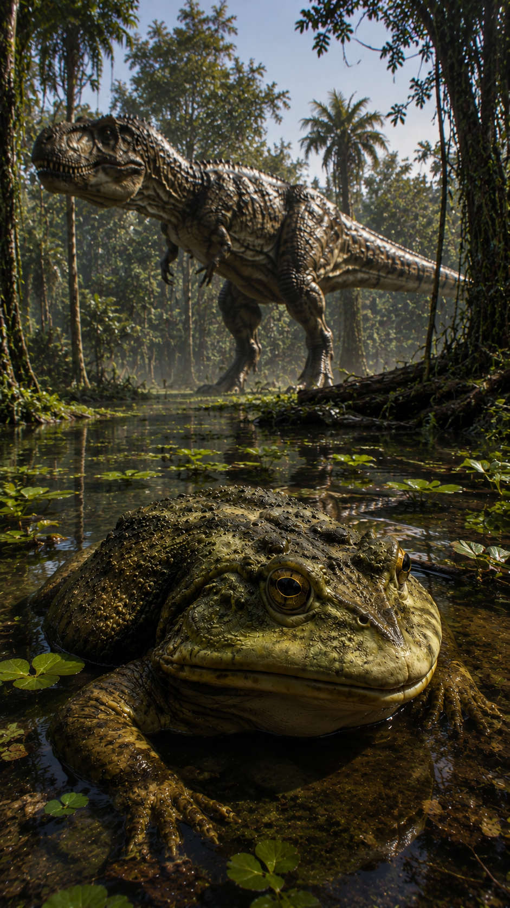
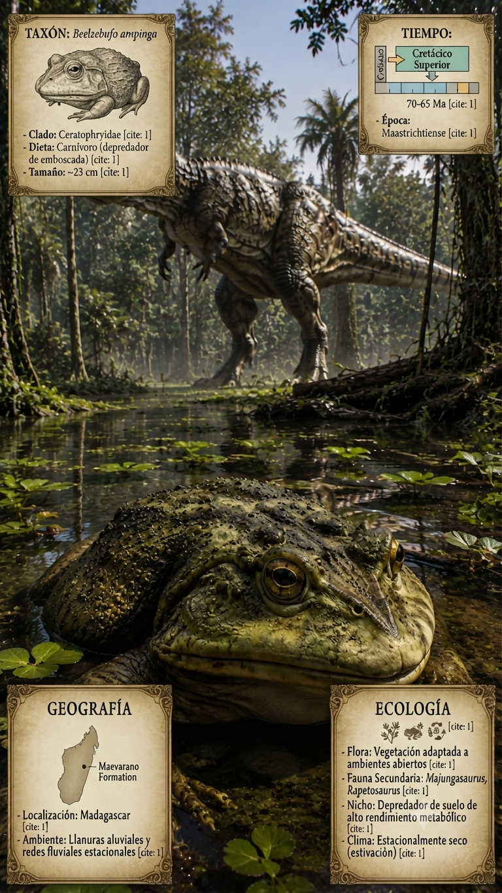
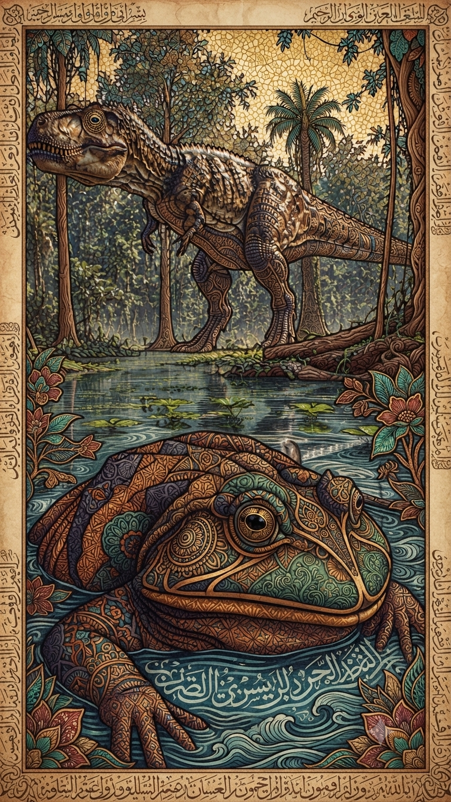

Paleoficha de PalEntropía



TAXÓN:
Beelzebufo ampinga
CLADO:
Neobatrachia (afinidad con Ceratophryidae)
DIETA:
Carnívoro (depredador de emboscada capaz de procesar pequeños vertebrados e invertebrados)
TAMAÑO:
Longitud rostro-cloacal estimada en 23 cm.
LOCOMOCIÓN:
Terrestre; musculatura de las extremidades posteriores adaptada para desplazamientos cortos mediante saltos y posicionamiento de espera activa en el sustrato.
TIEMPO:
Cretácico Superior (Maastrichtiense, aprox. 70–65 Ma)
GEOGRAFÍA:
Madagascar (Formación Maevarano)
EQUIVALENCIA PALEOGEOGRÁFICA:
Ambientes semiáridos continentales con redes fluviales estacionales.
AMBIENTE PALEAOECOLÓGICO:
Llanuras aluviales con vegetación baja y condiciones de alta insolación y estacionalidad hídrica.
ECOLOGÍA:
• Flora: Vegetación adaptada a ambientes abiertos y zonas de ribera con disponibilidad hídrica variable.
• Fauna secundaria: Comunidad de dinosaurios terópodos (Majungasaurus), saurópodos (Rapetosaurus) y otros taxones endémicos insulares.
• Nichos: Depredador de suelo de alto rendimiento metabólico. La estructura ósea presenta una osificación dérmica en la región craneal y una configuración mandibular que incrementa el área de inserción para la musculatura aductora. Estas adaptaciones morfológicas permiten la aplicación de fuerzas de mordida significativas para la manipulación de presas con exoesqueletos resistentes o tegumentos endurecidos.
• Relaciones: Neobatrachia. Presenta una estrecha afinidad morfológica con los ceratófridos modernos, aunque su posición filogenética exacta sigue siendo objeto de debate. Representa un gran depredador anfibio adaptado a los ecosistemas estacionales del Maastrichtiense de Madagascar.
CLIMA:
Wm25 (Cretácico cálido). Régimen climático marcado por una estación seca prolongada, lo que sugiere adaptaciones fisiológicas para la preservación hídrica (estivación).
ESTADO ECOLÓGICO:
Estable. Componente trófico de alto orden dentro del ecosistema endémico del Cretácico Superior malgache.